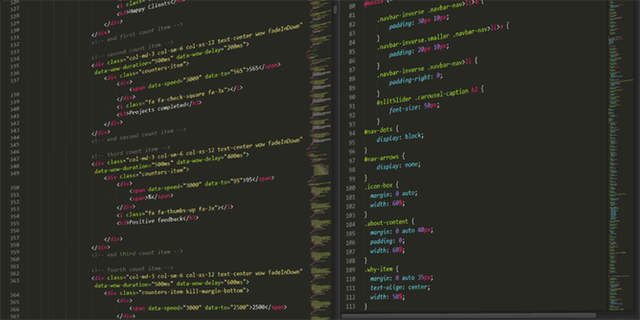

Css

Css = Cascading Style Sheets
CSS er et sporg tilegnet til computeren, der beskriver hvordan en hjemmeside skal se ud. Det er en CSS fil man laver til et HTML, XHTML eller XML dokument, og man derfra linker sit CSS link til sit dokument.
Ved at bruge CSS kan man adskille den basiske fra stylingen, og skabe mere overblik.
CSS - Lidt om historien
Håkon Wium Lie udviklede den første version af Css, og det blev derfra adopteret af W3C, der overtog standardiseringsarbejdet så det kunne blive mere udbredt. Den første browser der understøttede CSS var IE3.
Gennem tiden har CSS standarden udviklet sig enormt meget, og det vil forsætte. I dag kan man ikke forstille sig nogle browser der ikke vil understøtte css.
Hvor er det?
Css linket er placeret i head tagget af dit HTML dokument, og vil kun tælle i det HTML dokument det ligger i, og ikke alle dine HTML filer i dit projekt.
Det kan med fordele ligges i flere HTML dokumenter, så der ikke skal laves flere forskellige CSS dokumenter.
Dette sikre at der vil nemt være en genkendelig udseende på alle de forskellige side, i dit website.
Syntaks
CSS syntaks - referere til regler der er knyttet til css'et og html'en.
Alle tags kan styles og alle tags har en bestemt type (p, h1, h2, body a:link)
En regl bruges i form af selectors i css, og nogle eksempler kan beskrives ved;
| HTML |
CSS |
| Class |
.ClassName |
| ID |
#IDNAME |
| Alt på siden |
* |
| p tags |
p |
| Flere elemnter |
#ID, .Class, p |
| etc. target [attribute] |
[attribute name] |
| :Der skal ske noget |
:hover |
På w3schools er der alle selectors.
Declaration
Når man vil give sin valgte selector nogle regler skal man declare hvad det skal være. En declaration starter altid ud med hvilken selector man vil bruge, og derefter en krølleparentes .eksemple {}.
Inde i denne parentes skriver man sine properties og sine values, der altid er adskildt af et kolon : så koden kan læse forskellen. Man afslutter sin property med et semikolon; så koden ved hvornår din property slutter.
Man kan for eksemple declare at text farven i sit p tag skal være rød på denne måde;
p {
color: red;
}
Color her er en property, og farven red er en value.
p {
color: red;
font-size: 16px;
}
Her giver vi den endnu en property, font-size og endnu en value, 16px; der bestemmer hvor stor skriften skal være.
Kilder;
Billede:https://www.pexels.com/photo/close-up-of-computer-keyboard-248515/